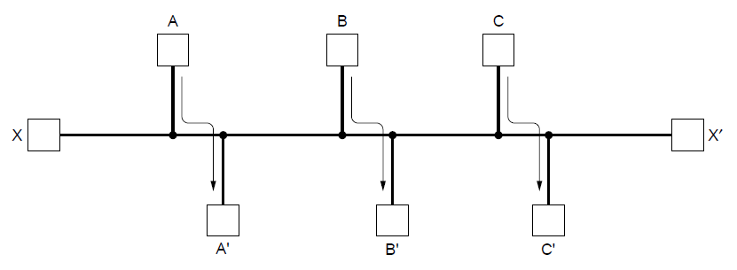
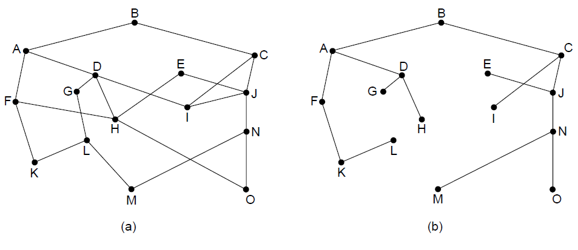
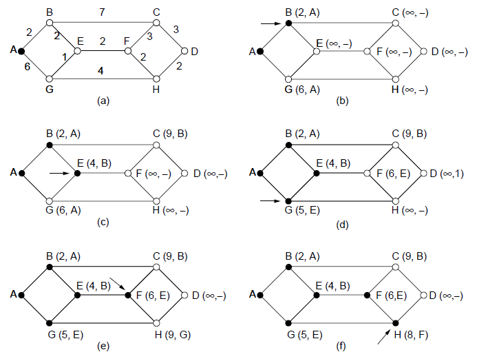
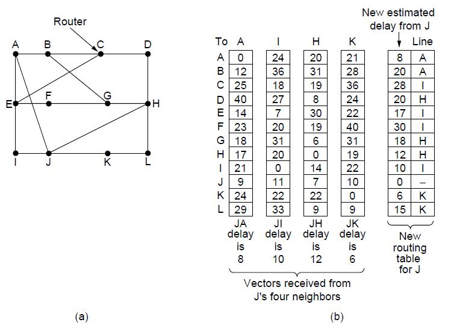
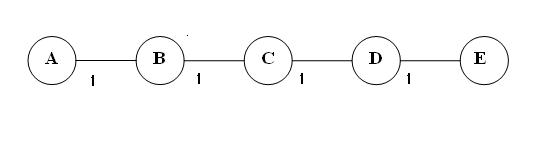
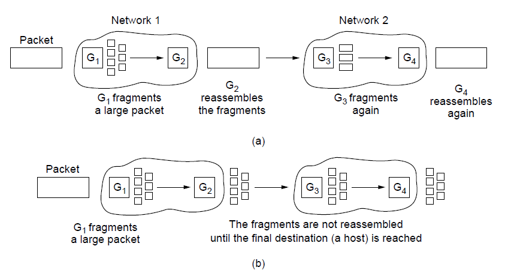
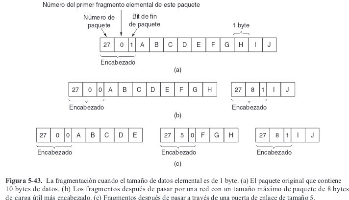
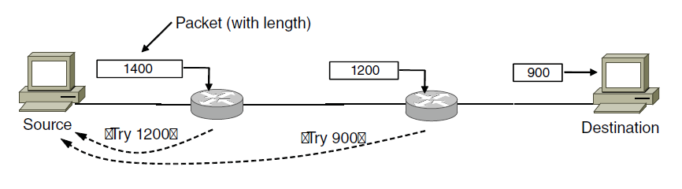

Problemas de diseño de la capa de red.
· Conmutación de paquetes de almacenamiento y reenvío. · Servicios ofrecidos a la capa de transporte. · Implementación de servicios sin conexión. · Implementacion dee servicios orientados a la conexión. · Comparación entre las redes de circuitos virtuales y datagramas.Conmutación de paquetes de almacenamiento y reenvío.
Un host que desea enviar un paquete lo transmite al enrutador más cercano, ya sea en su propia LAN o a través de un enlace punto a punto que va al ISP. El paquete se almacena ahí hasta que haya llegado por completo y el enlace haya terminado su procesamiento mediante la comprobación de la suma de verificación Después se reenvía al siguiente enrutador de la ruta hasta que llega al host destino, en donde se entrega. Este mecanismo se denomina conmutación de almacenamiento y envío.Servicios proporcionados a la capa de transporte
· Los servicios deben ser independientes de la tecnología del enrutador. · La capa de transporte debe estar aislada de la cantidad, tipo y topología de los enrutadores presentes. · Las direcciones de red disponibles para la capa de transporte deben usar un plan de numeración iguales(uniforme), incluso a través de las redes LAN y WAN.Implementación del servicio sin conexión
En este contexto, por lo general los paquetes se conocen como datagramas (en analogía con los telegramas) y la red se conoce como red de datagramas.Ver figura 5.2
En A, los paquetes 1,2 y 3 se almancenan unos momentos, después de haber llegado por el enlace entrante y de haber comprobado sus sumas de verificación. Después cada paquete se reenvía de acuerdo con la tabla de A, por el enlace de salida a C dentro de una nueva trama. Después, el paquete 1 se reenvía a E y después a F. Cuando llega a F, se envía dentro de una trama a H2 a través de la LAN. Los paquetes 2 y 3 siguen la misma ruta. Pero con el 4to paquete, cuando llega a A se envía al enrutador B, aun cuando también está destinado a F. Por alguna razón, A decidió enviar el paquete 4 por una ruta diferente a la de los primeros tres paquetes, ya sea por una congestión de tráfico en alguna parte de la ruta ACE y actualizó su tabla de enrutamiento. A este algoritmo se lo conoce como algoritmo de enrutamiento.Implementación del servicio orientado a la conexión
En este contexto la conexión se conoce como VC (circuito virtual), en analogía con los circuitos físicos establecidos por el sistema telefónico, y la red se denomina red de circuitos virtuales.Ver figura 5-3
El host H1 ha establecido una conexión 1 con el host H2. Esta conexión se recuerda como la primera entrada en cada una de las tablas de enrutamiento. La primera línea de la tabla A indica que si un paquete con el identificador de conexión 1 viene de H1, se enviará al enrutador C y se le dará el identificador de conexión 1. De manera similar, la primera entrada en C enruta el paquete a E, también con el identificador de conexión 1. Ahora si H3 también desea establecer una conexión con H2. Elige el identificador de conexión 1 (debido a que está iniciando la conexión y a que ésta es su única conexión) y le indica a la red que establezca el circuito virtual. Ahora aunque A sí puede saber con facilidad cuáles paquetes de conexión 1 provienen de H1 y cuáles proviene de H3, C no puede saberlo. Por esta razón, A asigna un identificador de conexión diferente al tráfico de salida para la sengunda conexión. Evitar confluctors de este tipo es la razón por la cual los enrutadores necesitan la habilidad de reemplazar identificadores de conexión en los paquetes de salida. A este proceso se lee conoce como CONMUTACIÓN MEDIANTE ETIQUETAS.MPLS (Conmutación Multiprotocolo Mediante Etiquetas)
Es un protocolo orientado a la conexión se utiliza dentro de las redes ISP en Internet, en donde los paquetes IP se envuelven en un encabezado MPLS que tiene un identificador de conexión o etiqueta de 20 bits. El servicio MPLS se oculta de los clientes.Ver Figura 5-4 (comparación entre red de datagramas y circuitos virtuales)
ALGORITMOS DE ENRUTAMIENTO
· Principio de optimización. · Algoritmo de la ruta más corta. · Inundación (Flooding). · Enrutamiento por vector de salida. · Enrutamiento por estado del enlace. · Enrutamiento en redes ad hoc. · Enrutamiento por difusión. · Enrutamiento multidifusión. · Enrutamiento anycast. · Enrutamiento para hosts móviles. · Enrutamiento en redes ad hoc (de nuevo).Equilibrio vs Eficiencia
Una vez que una red principal entra en operación, es de esperar que funcione de manera continua durante años, sin fallas a nivel de sistema. Durante ese período habrá fallas de hardware y de software de todo tipo. Los hosts, enrutadores y líneas fallarán en forma repetida y la topología cambiará muchas veces. El algoritmo de enrutamiento debe ser capaz de manejar los cambios de topología y tráfico sin necesidad de abortar todas las tareas en todos los hosts!!! La estabilidad también es una meta importante para el algoritmo de enrutamiento. Existen algoritmos de enrutamiento que nunca convergen hacia un conjunto de rutas fijo, sin importar el tiempo que permanezcan en operación. Debe converger con rapidez ya que se PUEDE INTERRUMPIR LA COMUNICACIÓN HASTA QUE EL ALGORITMO DE ENRUTAMIENTO HAYA LLEGADO A UN EQUILIBRIO. La equidad y la eficiencia parecen obvias, pero son metas contradictorias.  Hay suficiente tráfico entre A y A', entre B y B' y entre C y C' para saturar los enlaces horizontales. Con el fin de maximizar el flujo total, es necesario suspender X a X' por completo. Pero X y X' no lo ven de esa forma. Sin duda se requiere cierto compromiso entre la ___eficiencia global___ y la equidad hacia las conexiones individuales. En este ejemplo claro está que minimizar el retardo promedio de los paquetes es un cantidato obvio para enviar tráfico a través de la red en forma __efectiva__, pero también lo es aumentar al máximo la velocidad real de __transferencia total__ de la red. Estas dos metas están en conflicto!! Muchas redes como término medio intentan minimizar la distancia que debe recorrer el paquete, o simplemente reducir el número de saltos que tiene que dar un paquete.ALGORITMOS ADOPTATIVOS(enrutamiento dinámico) Y NO ADOPTATIVOS (enrutamiento estático)
Uno cambia sus decisiones de enrutamiento para reflejar los cambios de la topología y algunas veces también los cambios en el tráfico. Estos algoritmos de enrutamiento dinámico cambian en cuanto al lugar de donde sacan su información por ejemplo cuando una topología cambia saca la info de otro lado, o cuando pasan X segundos o cuando hay mucho tráfico en alguna ruta.PRINCIPIO DE OPTIMIZACIÓN
 Este principio establece que si el enrutador J está en la ruta óptima del enrutador I al enrutador K, entonces la ruta óptima de J a K también está en la misma ruta. Por ejemplo llamemos r_1 a la parte de la ruta de I a J y r_2 al resto de la ruta. Si existirera una ruta mejor que r_2 entre J y K, se podría concatenar con r_1 para mejorar la ruta de I a K, lo cual contradice nuestro postulado de que r_1r_2 es óptima. Dicho árbol se conoce comoárbol sumidero(o árbol divergente)
y se ilusta en lafigura 5-6(b)
, donde la métrica de distancia es el número de saltos. El objetivo de todos los algoritmos de enrutamiento es descubrir y usar los árboles sumidero para todos los enrutadores. Un árbol sumidero no es único, se denomina DAG en el caso de que se elijan todas las posibles rutas, DAG no tienen ciclos. Puesto que un árbol sumidero es un árbol, no contiene ciclos, por lo que cada paquete se entregará en un número de saltos finito y limitado.Algoritmo de la ruta más corta
 Los primeros cinco pasos utilizados para calcular el camino más corto desde A hasta D. Las flechas indican el nodo de trabajo.Inundación
Técnica en la que cada paquete entrante se envía en todas las líneas de salida, excepto en la línea por la que llegó. La inundación genera grandes cantidades de paquetes duplicados; de hecho, puede ser una cantidad infinita. Una de las medidas para controlar esta inundación es integrar uncontador de saltos
y que el paquete se descarte cuando llegue a 0. Esta técnica puede producir un número exponencial de paquetes duplicados a medida que aumenta el conteo de saltos y los enrutadores duplican los paquetes que ya han visto antes. Unamejor técnica
es llevar un registro de los paquetes difundidos en la inundación, para evitar enviarlos una segunda vez para lograr este objetivo hacemos que el enrutador de origen ponga un número de secuencia en cada paquete que reciba de sus hosts. Si un paquete de entrada está en la lista, no se difunde mediante inundación. La técnica de inundación no es práctica pero asegura entregar los paquetes a todos los nodos de la red.Enrutamiento por vector de distancia
 Opera haciendo que cada enrutador mantenga una tabla (un vector) que proporcione la mejor distancia conocida a cada destino y el enlace que se puede usar para llegar ahí. Para actualizar estas tablas se intercambia información con los vecinos. Eventualmente, todos los ruteadores conocen el mejor enlace para alcanzar cada destino. En el enrutamiento por vector de distancia, cada enrutador mantiene una tabla de enrutamiento indicada por cada enrutador de la red. Esta entrada consta de dos partes: la línea preferida de salida a usar para ese destino y una estimación del tiempo o distancia a ese destino. La distancia se podría medir como la cantidad de saltos o se podría usar otra métrica. Este proceso de actualización se ilusta en lafigura 5-2
. En la parte (a) se muestra una red. Las primeras cuatro columnas de la parte (b) muestran losvectores de retardo recibidos de los vecinos del enrutador
J.Limitaciones
Un problema es el de la transmisión de malas noticias por la red tales como la ruptura de un enlace o la desaparición de un nodo. Este algoritmo converge lentamente en estos casos. Aunque el principal inconveniente de este algirtmo es el de la cuenta a infinito.  · Inicialmente A está desactivado. Cuando A se activa, B se entera de que A existe al recibir su vector distancia y actualizar su tabla indicando que A dista 1. · El nodo C se entera de que A existe porque B le indica que tiene un enlace hacia A de coste 1. Entonces C actualiza su tabla registrando una trayectoria hacia A de coste 2. · Si el nodo A se desconecta entonces B no recibe el VD de A. Sin embargo el nodo C le dice que tiene una trayectoria hasta A de distancia 2. B no sabe que la trayectoria de C a A pasa por el mismo y por tanto cree que puede llegar a A a través de C por lo que actualiza su tabla registrando la distancia 2 + 1 = 3 hasta A. · En el siguiente intercambio, el nodo C comprueba que sus vecinos B y D tienen una trayectoria hasta A de distancia 3. C calcula su propia distancia hasta A en 3 + 1 = 4. En los siguientes intercambios, los nodos elevan ilimitadamente su distancia a A (cuenta a infinito). Mientras no se interrumpa la cuenta a infinito, el algoritmo no converge. Aunque se han propuesto diversas soluciones a este problemaEnrutamiento por estado de enlace
Otra referencia:
Enrutamiento por estado de enlace - Cisco El enrutamiento por vector de distancia se reemplazó por el enrutamiento por estado del enlace. El principal problema que provocó su desaparición era que, con frecuencia el algoritmo tardaba mucho en converger una vez que cambiana la topología de la red(debido al problema del conteo al infinito)
.Funcionamiento
Lo podemos dividir en cinco pasos fundamentales: · Descubrir a sus vecinos y sus direcciones. · Medir el costo a cada uno de sus vecinos. · Construir el paquete con la información recabada. · Enviar este paquete al resto de routers · Calcular la ruta mínima al resto de routers.Determinar los vecinos de cada nodo. Para ello, manda un paquete especial dependiendo que protocolo se utiliza, si es OSPF utilizaráHELLO
por cada línea punto a punto. Todo router que reciba este paquete debe responder indicando su identidad. Cálculo del coste a los vecinos. Cada router manda un paquete especialECHO
a través de la línea el cual debe volver a su origen. El tiempo de ida y vuelta dividido entre dos nodos da una aproximación razonable del costo a cada vecino de la red. Elaboración de paquete de estado de enlace. Consiste en que cada router construye un paquete con todos los datos que informan del estado de la red. La estructura de este paquete es la siguiente: · Identidad del router · Secuencia · Edad · Lista de nodos vecinos El problema de esta etapa es el momento de la creación de estos paquetes. Hay varias alternativas como hacerlo de manera periódica o bien cuando haya ocurrido un evento en la red como la caída de un nodo. Distribución de paquete de estado de enlace. Es la más complicada. Lo que hace es repartir el paquete por toda la red porinundación
. Para controlarla, cada paquete incluye un número de secuencia que aumenta con cada paquete nuevo enviado (como vimos anteriormente en Inundación). Cada router contiene una tabla con toda la información de tal manera que: A pesar de todo, surgen ciertos problemas como el reinicio de la secuencia. Si ocurre esto, se producirá un caos en la red. Solución usar secuencias de 32 bits, lo suficientemente grandes para no tener que poner la secuencia a 0. Otros conflictos surgen en el caso de caída de un router (reinicio del número de secuencia) o si se recibe un número de secuencia equivocado por haberse modificado alguno de sus bits durante la transmisión. La solución introducir edad de cada paquete e ir disminuyéndola en un intervalo pequeño de tiempo. Cuando llegue a 0, descartarlo. Cálculo de ruta mínima. Una vez que el router ha completado la recompilación de información, puede construir el grafo de la subred. De esta manera, se puede utilizar algoritmo de Dijkstra para calcular el camino más corto a todos los nodos.Enrutamiento jerárquico
Problema: Las tablas que están en crecimiento constante no sólo consumen memoria del enrutador, sino que también se necesita más tiempo de CPU para examinarlas y más ancho de banda para enviar informes de estado entre enrutadores, la red puede crecer hasta el punto en que ya no sea viable que cada enrutador tenga una entrada para cada uno de los demás enrutadores. Ahí es donde entra elenrutamiento jerárquico
, como ocurre en la red telefónica. Cuando se utiliza el enrutamiento jerárquico, los enrutadores se dividen en lo que llamaremos regiones. Cada enrutador conoce todos los detalles para enrutar paquetes a destinos dentro de su propia región, pero no sabe nada de la estructura interna de las otras regiones. Un buen ejemplo sería considerar una empresa. La mayoría de las intranets corporativas consisten en una red troncal de alta velocidad. Conectado a esta red troncal hay enrutadores que a su vez están conectados a un grupo de trabajo en particular. Estos grupos de trabajo ocupan una LAN única. La razón por la cual este es un buen arreglo es porque aunque haya decenas de grupos de trabajo diferentes, el lapso (recuento de saltos máximo para obtener de un host a cualquier otro host en la red) es 2. Incluso si los grupos de trabajo dividieron su red LAN en particiones más pequeñas, el lapso solo podría aumentar a 4 en este ejemplo particular.Si cada enrutador estaba conectado a 2 enrutadores, muestra la conveniencia del enrutamiento jerárquico. Disminuye la complejidad de la topología de red, aumenta la eficiencia de enrutamiento y causa menos congestión
.Enrutamiento difusión
El envío simultáneo de un paquete a todos los destinos se llama difusión (broadcasting). Existen varios métodos para llevarla a cabo. Un método de difusión que no requiere características especiales de la red es que el origen sólo envíe un paquete distinto a cada destino. El método no sólo desperdicia ancho de banda y es lento, sino que también requiere que el origen tenga una lista completa de todos los destinos. Una mejora es el enrutamiento multidestino es como los paquetes con direccionamiento individual, sólo que cuand varios paquetes deben seguir la misma ruta, uno de ellos paga la tarifa completa y los demás viajan gratis, el ancho de banda se utiliza con más eficiencia. Ya hemos visto una mejor de enrutamiento por difusión:inundación
. Cuando se implementa con un número de secuencia por cada origen, la inundación usa los enlaces de manera eficiente con una regla de decisión de los enrutadores que es relativamente simple. La inundación es poco adecuada para la comunicación punto a punto ordinaria, para difusión puede merecer que se le considere con seriedad. Pero podemos hacer algo todavía mejor. La idea del reenvío por ruta invertida es que cuando llega un paquete difundido a un enrutador, éste lo revisa para ver si llegó por el enlace que se usa por lo común para enviar paquetes hacia el origen de la difusión. De ser así hay excelentes posibilidades de que el paquete difundido haya seguido la mejor ruta desde el enrutador y por lo tanto sea la primera copia en llegar al enrutador. Si éste es el caso, el enrutador reenvía copias del paquete a todos los enlaces, excepto a aquel por el que llegó. No obstante, si el paquete difundido llegó por un enlace diferente del preferido para llegar al origen, el paquete se descarta como probable duplicado.Ver figura 5-15 y página 328 de la 5ta edición de Andrew Tanenbaum
... (COMPLETAR)Enrutamiento multidifusión
Enrutamiento anycast
Enrutamiento para hosts móviles
Enrutamiento en redes ad hoc
Algoritmos de control de congestión
Interconexión de redes
Existen muchas redes distintas entre ellas PAN, LAN, MAN, y WAN. Ya numerosos protocolos con un uso muy difundido a través de estas redes, en cada capa. En las siguientes secciones estudiaremos con cuidado los aspectos que surgen cuando se conectan dos o más redes para formar una interred. Sería más simple unir redes si todos usaran una sola tecnología de red; a menudo se da el caso de que hay un tipo dominante de red, como Ethernet. Los distintos tipos de redes luchan con problemas diferentes; por ejemplo, las redes Ethernet y satelitales casi siempre difieren. Al reutilizar los sistemas existentes, como operar redes de datos a través del servicio de cable, la red telefónica y el cableado elétrico, se agregan liminataciones que ocasionan la divergencia de la características de las redes.Cómo se pueden conectar las redes
Hemos analizado varios dispositivos diferentes que conectan redes, incluyendo repetidores, hubs, switches, puentes, enrutadores y puertas de enlace. Los repetidores y hubs sólo desplazan bits de un cable a otro. En su mayoría son dispositivos analógicos y no comprenden nada sobre los protocolos de las capas superiores.Los puentes y switches operan en la capa de enlace. Se pueden usar para construir redes, pero sólo con una pequeña traducción de protocolos en el proceso; por ejemplo, entre los switches Ethernet de 10, 100 y 1000 Mbps
. Hablaremos de los enrutadores operan en la capa red. Primero observemos a un alto nivel la forma en que sep uede usar la interconexión con una capa de red común para interconectar redes distintas. Se muestra en lafigura 5-39(a)
una interred compuesta por redes 802.11, MPLS y Ethernet. Suponga que la máquina fuente en la red 802.11 desea enviar un paquete a la máquina de destino en la red Ethernet. Como estas tecnologías son distintas y además están separadas por otro tipo de red(MPLS),se requiere un procesamiento adicional en los límites entre las redes
. Como diferentes redes pueden tener distintas formas de direccionamiento, el paquete transporta una dirección de capa de red que puede identificar cualquier host a través de las tres redes. (Error de tipo página 367 Tanenbaum (dferentes)). El primer límite al llega el paquete es cuando cambia de una red 802.11 a una red MPLS. 802.11 proporciona un servicio de conexión, pero MPLS provee un servicio orientado a conexión. Esto significa que se debe establecer un circuito virtual para cruzar esa red.Para manejar este problema, el paquete se divie en fragmentos y cada fragmento se envía por separado. Cuando los fragmentos llegan a su destino, se vuelven a ensamblar. Entocnes es cuando el paquete ha completado su viaje.
Cabe mencionar que hay una diferencia esencial entre el caso de enrutamiento y el caso de conmutación (o puenteo). Con un enrutador, el paquete se extrae de la trama y la dirección de red en el paquete se utiliza para decidir a dónde enviarlo. Con un switch(o puente), toda la trama se transporta con base en su dirección MAC. Los switches no tienen que entender el protocolo de la capa de red que se utiliza para conmutar los paquetes. Los enrutadores sí tienen que hacerlo (la trama vendría a ser [[802.11]|[IP]]).
Cuando se introdujeron los puentes, la intención era que unieran distintos tipos de redes, o por lo menos distintos tipos de LAN. Para ello debían traducir tramas de una red LAN en tramas de otra LAN. Sin embargo, esto no funcionó bien debido a la misma razón por la que es difícil la interconexión de redes: las diferencias en las características de las LAN (como los distintos tamaños máximos de paquetes, y las LAN con y sin clases de prioridad) son difíciles de enmascarar. En la actualidadd, el uso más común de los puentes es para conectar el mismo tipo de red en la capa de enlace y los enrutadores conectan distintas redes en la capa de red. Un enrutador que puede manejar múltiples protocolos de red se denomina enrutador multiprotocolo. Este debe traducir los protocolos o dejar una conexión para una capa de protocolo superior.Calidad de servicio
Dos campos son importantes: Traffic class y Flow label. Hay tres modelos de calidad de servicio: · Best Effort: Todos los paquetes son tratados de igual forma y no provee una calidad de tráfico. · Integrates services(IntServ): El usuario solicita de antemano los recursos que necesita; cada router del trayecto ha de tomar nota y efectuar la reserva soli- citada. Este método es complejo y hace reserva en cada router por cada flujo. Además tampoco es escalable. · Differentialed Services (DiffServ): El usuario marca los paquetes con una determinada etiqueta que marca la prioridad y el trato que deben recibir por parte de los routers; estos no son conscientes de los flujos activos.Coexistencia y transición
Transición de IPv4 a IPv6 · IP capa cual: los routers y los host soportan IPv4 e IPv6. · Túneles de IPv6 sobre IPv4: los paquetes de IPv6 se encapsulan con encabezados IPv4. Estas técnicas de transición se dividen en 3 categorías: · Doble pila: provee soporte a ambos protocolos en el mismo dispositivo. · Tunelización: permite el tráfico de paquetes IPv6 sobre la estructura de la red IPv4. · Traducción: Permite la comunicación entre nodos que sólo soportan IPv6 y nodos que sólo soportan IPv4.Fragmentación de paquetes
Por lo general, una fuente no conoce la ruta que tomoará un paquete a través de la red hacia un destino, por lo que en definitiva no sabe qué tan pequeños deben ser los paquetes para llegar ahí. A este tamaño de paquete se le conoce como MTU de la ruta(Unidad de Transmisión Máxima de la ruta). Incluso si la fuente conociera el MTU de la ruta, los paquetes se enrutan de manera independiente en una red sin conexión como Internet. Este enrutamiento significa que las rutas pueden cambiar de repetnte, lo que a su vez puede cambiar de manera inesperada el MTU de la ruta.La solución alternativa es permitir que los enrutadores dividan los paquetes en fragmentos y envíen cada uno como un paquete de red separado
. Sin embargo es mucho más fácil convertir un objeto grande en pequeños fragmentos que el proceso inverso (Segunda Ley de termodinámica). Existen dos estrategias opuestas para recombinar los fragmentos de vuelta en el paquete original. La primera es hacer que la fragmentación producida por una red de "pequeños paquetes" sea transparente para cualquier red subsecuente por la que deba pasar el paquete en su camino hacia el destino final. Esta opción semuestra en la figurafigura 5-42(a)
. En este método, cuando un paquete de tamaño excesivo llega a G1, el enrutador lo divide en fragmentos. Cada fragmento es dirigido al mismo enrutador de salida, G2, en donde se recombinan las piezas. De esta manera se ha hecho transparente el paso a través de la red de paquete pequeño.Las redes subsecuentes ni siquiera se enteran de que ha ocurrido
una fragmentación. La fragmentación transparente es sencilla, pero tiene algunos problemas. El enrutador de salida debe saber cuándo ha recibido todas las piezas, por lo que debe incluirse un campo de conteo. Además como todos los paquetes deben salir por el mismo enrutador para volver a ensamblarlos, la rutas están restringidas. Al no permitir que algunos fragmenos sigan una ruta al destino final, y otros fragmentos una ruta distinta, puede bajar un poco el desempeño. Lo más importante es la cantidad de trabajo que el enrutador tenga que llevar a cabo. Figura 5-42
(a) Fragmentación transparente. (b) Fragmentación no transparente. Laotra
estrategia de fragmentación es abstenerse de recombinar los fragmentos en los enrutadores. Una vez que se ha fragmentado un paquete, cada fragmento se trata como si fuera un paquete original. Los enrutadores pasan los fragmentos, como se muestra en lafigura 5-42(a)
; la recombinación ocurre sólo en el host de destino.Ventaja de fragmentación no transparente
Los enrutadores tienen que trabajar menos. IP funciona de esta manera. Un diseño completo requiere que los fragmentos se enumeren de tal forma que se pueda reconstruir el flujo de datos original. El diseño utilizado por IP es proporcionar a cada fragmento un número de paquete (que todos los paquetes transportan), un desplazamiento de bytes absoluto dentro del paquete, y una bandera que indica si es el final del paquete. En lafigura 5-43
se muestra un ejemplo.  Los fragmenos se pueden colocar en un búfer en el destino, en el lugar apropiado para recombinarlos, aun cuando lleguen desordenados. Los fragmentos también se pueden fragmentar si pasan a través de una red con una MTU aún más pequeña. Esto se muestra en lafigura 5-43(c)
. Las retransmisiones del paquete (si no se recibieron todos los fragmentos) se pueden fragmentar en distintas piezas. Por último, los fragmentos pueden ser de un tamaño arbitrario, incluso hasta de un sólo byte más el encabezado del paquete. Por desgracia, este diseño aún tiene problemas. La sobrecarga puede ser mayor que con la fragmentación transparente, ya que los encabezados de los fragmentos ahora se transportan a través de algunos enlaces en donde tal vez no sean necesarios. Pero el verdadero problema es la existencia de los fragmentos en primera instancia.La fragmentación es perjudicial para el desempeño ya que al igual que las sobrecargas de los encabezados, un paquete completo se extravía si cualquiera de sus fragmentos se pierde
.MTU
 Esto nos conduce de vuelta a la solución original de desshacernos de la fragmentación en la red, la estrategia que se utiliza en la Internet moderna. Al proceso se le conoce como descubrimiento de MTU de la ruta y trabaja de la siguiente manera. Cada paquete IP se envía con sus bits de encabezado establecidos para indicar que no se pueden realizar ningún tipo de fragmentación. Si un enrutador recibe un paquete demasiado grande, genera un paquete de error lo devuelve a la fuente y descarta el paquete. Si un enrutador más adelante en la ruta tiene una MTU aún más pequeña, se repite el proceso. Laventaja
del descubrimiento MTU de la ruta es que ahora la fuente sabe la longitud del paquete que puede enviar. Si las rutas y la MTU de la ruta cambian, se activarán nuevos paquetes deerror
y la fuente se adaptará a la nueva ruta. Ladesventaja
del descubrimiento de MTU de la ruta es que puede haber retardos iniciales adicionales sólo por enviar un paquete. Tal vez sea necesario más de un retardo de ida y vuelta para sondear la ruta y encontrar la MTU.La fragmentación se sacó de la red y se pasó a los hosts.
FIN.